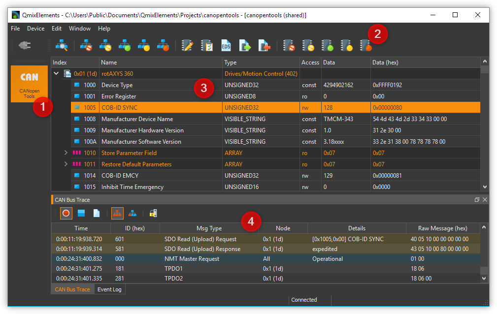
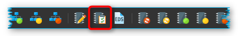
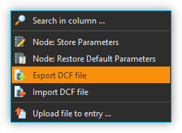
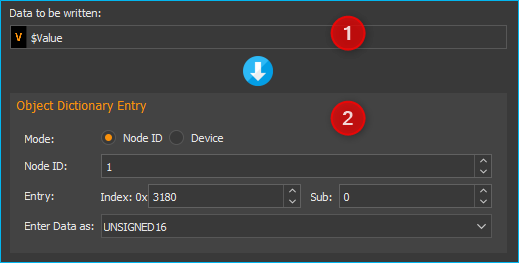

25. CANopen Tools Plugin
25.1. Einführung
Dieses Plugin enthält Werkzeuge zum Zugriff und zur Konfiguration von CANopen Geräten. CANopen ist eine standardisierte Anwendung für verteilte industrielle Automatisierungslösungen auf der Basis von CAN. CANopen wurde ursprünglich für die Steuerung von Maschinennetzwerken entwickelt. Heute wird CANopen in vielen Bereichen, wie z.B. Medizintechnik, Fahrzeugbau, Schifffahrt und öffentlichen Transportmitteln, eingesetzt.
Basis der CANopen Profilfamilie ist ein Kommunikationsprofil (Communication Profile for Industrial Systems DS-301), welches die Kommunikationsmechanismen und deren Beschreibung spezifiziert. Die verschiedenen in der Automatisierungstechnik verwendeten Gerätetypen (z.B. Antriebe, Bediengeräte, Regler) werden in Geräteprofilen beschrieben. In diesen Geräteprofilen werden sowohl Funktionalität als auch Parameter von Standardgeräten des jeweiligen Typs festgelegt. Diese standardisierten Profile sind die Grundlage für einen einheitlichen Zugriff auf die CANopen-Geräte über den CAN-Bus. Dies ermöglicht eine weitgehende Unabhängigkeit von einem bestimmten Hersteller.
25.2. CANopen Tools Projekt öffnen
Um den CANopen Tools Workbench zu öffnen, laden Sie das CETONI Elements Projekt
canopentools. Klicken Sie dafür im Hauptmenü der Anwendung auf den
Menüpunkt . Im Projektdialog wählen
Sie dann das Projekt canopentools.
Die Anwendung startet dann neu und sie sollten danach den CANopen Tools Workbench sehen:
Den View des CANopen Tools Plugin können Sie durch Drücken der Schaltfläche CANopen Tools ❶ in der Seitenleiste einblenden. In der Werkzeugleiste ❷ finden Sie wichtige Funktionen zum Zugriff auf Geräte im Netzwerk.
Den Hauptbereich des CANopen Tools Workbench bilden der Objektverzeichnis-Editor (Object Dictionary Editor) ❸ zum Lesen und Schreiben einzelner Einträge im Objektverzeichnis.
Zusätzlich können Sie die Nachrichten auf dem CAN-Bus in Echtzeit mit dem CAN Bus Trace Fenster ❹. überwachen.
25.3. Werkzeugleiste
Netzwerkscan - sucht nach allen angeschlossenen Geräten |
|
Reset aller Geräte durchführen |
|
|
Reset der Kommunikationsparameter aller Geräte |
|
Prozessdatenkommunikation aller Geräte starten |
|
Alle Geräte in den Zustand Pre-operational versetzen. |
Kommunikation aller Geräte stoppen |
|
|
Parameter des ausgewählten Gerätes (Knotens) in nichtflüchtigen Gerätespeicher sichern |
|
Alle Parameter des ausgewählten Gerätes auf Standard-Werte zurücksetzen |
|
EDS Datei (Electronical Data Sheet) dem ausgewählten Gerät zuweisen |
Parameter des ausgewählten CANopen Knotens in eine DCF-Datei exportieren |
|
|
DCF-Datei in den ausgewählten CANopen Knoten importieren |
|
Reset des ausgewählten Gerätes |
|
Reset der Kommunikationsparameter des ausgewählten Gerätes |
Prozessdatenkommunikation des ausgewählten Gerätes starten |
|
|
Ausgewähltes Geräte in den Zustand Pre-operational versetzen. |
|
Kommunikation des ausgewählten Gerätes stoppen |
{kind=link}
{kind=link}
{kind=link}
{kind=link}
{kind=link}
25.4. Objektverzeichnis-Editor
25.4.1. Was ist ein CANopen Objektverzeichnis?
Das Objektverzeichnis ist das zentrale Element des CANopen-Standards. Hier wird die komplette Gerätefunktionalität eines CANopen-Gerätes beschrieben. Jeder CANopen-Knoten implementiert ein lokales Objektverzeichnis. Es ist im Wesentlichen eine Gruppierung von Objekten die über das Netzwerk zugänglich sind in einer geordneten, vordefinierten Art und Weise.
Jedes Objekt in diesem Verzeichnis wird über einen 16-Bit-Index und einen 8-Bit-Subindex adressiert. Über die Einträge des Objektverzeichnisses werden die „Anwendungsobjekte“ eines Gerätes, wie z.B. Ein- und Ausgangssignale, Geräteparameter, Gerätefunktionen oder Netzwerkvariablen, in standardisierter Form über das Netzwerk zugänglich gemacht.
Index |
Objekt |
|---|---|
0000h |
Reserviert |
0001h-009Fh |
Datentypen |
00A0h-0FFFh |
Reserviert |
1000h-1FFFh |
Bereich für Kommunikationsprofil DS-301 |
2000h-5FFFh |
Herstellerspezifischer Bereich |
6000h-9FFFh |
Standardisierter Bereich des implementierten Geräteprofils |
A000h-FFFFh |
Reserviert |
Einfache Variablen können direkt mit dem 16-Bit Index angesprochen werden. Im Falle von Datenstrukturen oder Arrays adressiert der Index die gesamte Datenstruktur. Der zusätzliche 8-Bit Subindex erlaubt den Zugriff auf einzelne Elemente einer Datenstruktur oder eines Arrays.
Index |
Subindex |
Datentyp |
Name |
|---|---|---|---|
1000h |
0 |
UNSIGNED32 |
Device Type |
1001h |
0 |
UNSIGNED8 |
Error Register |
1018h |
RECORD |
Identity Object |
|
0 |
UNSIGNED8 |
Number of entries |
|
1 |
UNSIGNED32 |
Vendor Id |
|
2 |
UNSIGNED32 |
Product Code |
|
3 |
UNSIGNED32 |
Revision Number |
|
4 |
UNSIGNED32 |
Serial Number |
Das Objektverzeichnis ist in zwei Bereiche unterteilt. Der erste Bereich enthält Angaben über das Gerät, wie Geräteidentifikation, Herstellername, etc. sowie Kommunikationsparameter. Der zweite Teil beschreibt die spezifische Gerätefunktionalität.
25.4.2. Übersicht über der Objektverzeichnis-Editor
Im Objektverzeichnis-Editor haben Sie Zugriff auf die Objektverzeichnisse aller angeschlossener Knoten.

Die Darstellung ist eine baumartige Struktur mit 3 Ebenen. In der Ebene ❶ finden Sie alle Geräte, die bei einem Netzwerkscan erkannt wurden. Wenn Sie einen Geräte-Knoten aufklappen, sehen Sie in der Ebene ❷ das komplette Objektverzeichnis des Knotens mit allen seinen Objektverzeichnis-Einträgen. Auf einfache Variablen können Sie direkt in dieser Ebene über den Index zugreifen. Komplexe Datenstrukturen oder Arrays besitzen zusätzlich eine Ebene ❸. Hier können Sie auf die einzelnen Elemente eines Arrays oder einer Datenstruktur über den Subindex zugreifen. Einträge von Datenstrukturen die Untereinträge besitzen, sind in der Darstellung farblich hervorgehoben ❷.
Die folgende Übersicht zeigt Ihnen noch einmal die Struktur:
 Geräte am CAN-Bus (Ebene 1)
Geräte am CAN-Bus (Ebene 1)
{kind=link}
25.4.3. Gerätenamen vergeben
Nach einem Netzwerkscan werden alle Geräte nur durch Ihre Knotennummer (Spalte Index) eindeutig identifiziert. Sie können in der Spalte Name eine eigene Bezeichnung für einen Knoten vergeben, um diesen leichter zu identifizieren.
Klicken Sie dafür mit der linken Maustaste doppelt in die Zelle Name des Knotens und geben Sie einen Namen ein.
25.4.4. Elektronisches Datenblatt (EDS) zuweisen
Die Objektverzeichnisse unterschiedlicher Knoten enthalten unterschiedliche Einträge. Nach einem Netzwerkscan werden Ihnen lediglich die Standard-Einträge, die im CANopen Standard DS301 spezifiziert sind, angezeigt. Alle geräteprofilspezifischen oder herstellerspezifischen Einträge fehlen. Um auf diese Einträge zugreifen zu können, benötigen Sie eine EDS-Datei (Electronical Data Sheet) für Ihr Gerät.
Ob einem Gerät bereits eine EDS-Datei zugewiesen wurde, erkennen Sie am Symbol des Gerätes in der Index-Spalte.
|
CAN Knoten ohne EDS-Datei |
|
CAN Knoten, dem bereits eine EDS Datei zugewiesen wurde |
Wenn Sie wissen möchten, welche EDS-Datei einem Knoten zugewiesen wurde, dann bewegen Sie den Mauspfeil einfach über den Knoten und warten, bis der Hilfetext eingeblendet wird. Hier sehen Sie den kompletten Dateipfad der zugewiesenen EDS-Datei.

Um eine EDS-Datei zuzuweisen, wählen Sie zuerst das Gerät im Objektverzeichnis-Editor durch Anklicken aus. Drücken Sie dann in der Werkzeugleiste die Schaltfläche Assign EDS File.

Alternativ können Sie auch durch Drücken der rechten Maustaste das Kontextmenü des Objektverzeichnis-Editor aufrufen und aus dem Kontextmenü den Menüpunkt Assign EDS File wählen.

Nach dem Zuweisen der EDS-Datei können Sie auf alle Geräteparameter zugreifen.
Wichtig
Konfigurationsparameter wie Gerätenamen oder zugewiesene EDS-Dateien werden automatisch in den Projekteinstellungen des aktuellen Projekts gespeichert und bei einem Neustart der Anwendung oder beim Laden eines Projektes wiederhergestellt.
Tipp
Erstellen Sie unterschiedliche Projekte (:) um schnell zwischen unterschiedlichen Netzwerkkonfigurationen zu wechseln.
25.4.5. Objektverzeichnis-Einträge lesen / schreiben
Sobald Sie im Objektverzeichnis einen Eintrag anklicken, wird der entsprechende Eintrag vom Gerät gelesen und der Inhalt der Spalten Data und Data (hex) mit dem gelesenen Wert gefüllt.

Um Geräteparameter zu schreiben, klicken Sie einfach mit der linken Maustaste doppelt in die Data oder Data (hex) Spalte des Objektverzeichniseintrages, den Sie ändern möchten.

Nach dem Doppelklick können Sie den Wert der Zelle ändern. Sobald Sie die Enter-Taste drücken oder mit der Maus in eine andere Zelle klicken, wird der Wert übernommen und zum Gerät übertragen.
Tipp
Sie können nur Objektverzeichniseinträge schreiben, deren Zugriffstyp (Spalte Access) read / write (rw) oder write only (wo) ist.
Wichtig
So lange Sie die geänderten Daten nicht durch die Funktion Save Parameters in den nichtflüchtigen Gerätespeicher gespeichert haben, gehen alle Parameteränderungen nach dem Ausschalten oder bei einem Gerätereset verloren.
25.4.6. Geräteparameter dauerhaft speichern / wiederherstellen
Wenn Sie Objektverzeichniseinträge geschrieben haben, gehen die Änderungen beim Ausschalten des Gerätes oder bei einem Gerätereset verloren. Um die Geräteparameter dauerhaft in den nichtflüchtigen Gerätespeicher zu schreiben, müssen Sie nach dem Schreiben der Objektverzeichniseinträge noch die Schaltfläche Node: Store Parameters in der Werkzeugleiste anklicken (siehe Abbildung unten).

Wenn Sie die Default-Geräteparameter (Werkseinstellungen) eines Gerätes wiederherstellen möchten, klicken Sie in der Werkzeugleiste die Schaltfläche Node: Restore Default Parameters.
Alle Parameteränderungen, die Sie in dem Gerät gespeichert haben gehen dann verloren und werden mit den Default-Parametern überschrieben.
25.4.7. Geräteparameter in DCF-Datei exportieren
Sie können die vollständige Konfiguration eines CANopen-Knotens in ein standardisiertes Dateiformat als DCF-Datei (Device Configuration File) exportieren.
Wichtig
Eine DCF-Datei ist eine EDS-Datei mit den aktuellen Werten jedes Objektes. D.h. der DCF-Export kann nur bei Knoten mit zugewiesener EDS-Datei durchgeführt werden.
Um den Parameterexport zu starten, klicken Sie einfach mit der rechten Maustaste auf den Knoten oder auf einen Objektverzeichniseintrag des Knotens und wählen Sie dann im Kontextmenü den Menüpunkt .
25.4.8. Geräteparameter aus DCF-Datei importieren
Sie können die vollständige Konfiguration eines CANopen-Knotens aus einer DCF-Datei importieren.
Wichtig
Eine DCF-Datei ist eine EDS-Datei mit den aktuellen Werten jedes Objektes. D.h. der DCF-Import kann nur bei Knoten mit zugewiesener EDS-Datei durchgeführt werden.
Um den Parameterimport zu starten, klicken Sie einfach mit der rechten Maustaste auf den Knoten oder auf einen Objektverzeichniseintrag des Knotens und wählen Sie dann im Kontextmenü den Menüpunkt .


Nach dem Import sind die importierten Parameter noch nicht dauerhaft im nichtflüchtigen Speicher des Gerätes gespeichert. D.h. Sie müssen die Parameter explizit durch den Menüpunkt speichern.
25.5. CAN Bus Trace Fenster
Mit dem CAN Bus Trace können Sie die Nachrichten auf dem CAN-Bus in Echtzeit überwachen und aufzeichnen.
Das Trace-Fenster besteht im Wesentlichen aus der Werkzeugleiste ❶ und der Liste mit den aufgezeichneten Nachrichten ❷.
25.5.1. Werkzeugleiste
|
Startet die Aufzeichnung von CAN-Nachrichten |
|
Stoppt die Aufzeichnung von CAN-Nachrichten |
|
Löscht alle aufgezeichneten Nachrichten aus der Trace-Liste |
Aktiviert die Aufzeichnung der Nachrichten aller CAN-Knoten |
|
|
Nur die Nachrichten das aktuell ausgewählten Knotens werden aufgezeichnet |
|
Aktiviert / deaktiviert das automatische Scrolling zur zuletzt aufgezeichneten Nachricht |
{kind=link}
25.5.2. Die Trace-Liste
In der Trace-Liste werden alle Nachrichten in chronologischer Reihenfolge angezeigt, d.h. ältere Nachrichten sind weiter oben und aktuellere Nachrichten weiter unten in der Liste. Der letzte Eintrag der Liste ist stets die zuletzt aufgezeichnete Nachricht.

Wenn das automatische Scrolling aktiviert ist, wird die Anzeige stets zur zuletzt aufgezeichneten Nachricht gescrollt. Wenn Sie während der Aufzeichnung ältere Nachrichten anschauen wollen, sollten Sie das automatische Scrolling deaktivieren.
Die unterschiedlichen Arten von CANopen Nachrichten werden Ihnen in der Liste unterschiedlich eingefärbt dargestellt um die Übersichtlichkeit zu erhöhen. Folgende Farben werden verwendet:
Nicht eingefärbt - PDO Nachrichten
Blau - Netzwerk Management Nachrichten (NMT), Bootup Nachrichten und Nachrichten zur Knotenüberwachung (Heartbeat & Node Guarding)
Gelb – SDO Nachrichten
Rot – Emergency Nachrichten
Bei der Aufzeichnung können Sie umschalten, ob Sie die Nachrichten aller Knoten aufzeichnen möchten oder nur die Nachrichten eines einzelnen Knotens. Wenn Sie Umschalten auf die Aufzeichnung der Nachrichten eines einzelnen Knotens, dann werden nur noch die Nachrichten des Knotens aufgezeichnet, der bei der Umschaltung auf diesen Modus im Objektverzeichnis-Editor ausgewählt war.
Um die Nachrichten eines anderen Knotens aufzuzeichnen, müssen Sie den anderen Knoten im Objektverzeichnis Editor auswählen. Anschließend aktivieren Sie wieder die Aufzeichnung für alle Knoten und danach wieder die Aufzeichnung eines einzelnen Knotens.
25.6. CANopen Script-Funktionen
Das CANopen Tools Plugin liefert für das Scripting System Funktionen zum Lesen und Schreiben von Objektverzeichniseinträgen angeschlossener CANopen Geräte. Die entsprechenden Funktionen finden Sie in der Kategorie Device Functions:

25.6.1. Objektverzeichnis lesen – Read Object Dictionary
{kind=link}
Mit dieser Funktion können Sie einen Objektverzeichniseintrag lesen und den gelesenen Wert in eine Scriptvariable speichern. Über Mode ❶ wählen Sie aus, ob Sie zum Zugriff auf das Gerät die CANopen Knotennummer (Node ID) verwenden wollen oder ob Sie über den Gerätenamen auf das Gerät zugreifen.

Haben Sie bei Mode Node ID gewählt, dann tragen Sie im Feld Mode Node ID ❷ die Knotennummer des CANopen Gerätes ein. Bei Entry ❸ wählen Sie den Objektverzeichniseintrag aus, der gelesen werden soll. Dieser besteht aus Index (hexadezimal) und Sub Index (dezimal). Danach wählen Sie bei ❹ noch den Datentyp des Eintrags aus. Im Variablenfeld ❺ tragen Sie dann abschließend noch den Namen der Variablen ein, in die der gelesene Wert gespeichert werden soll.
Wenn Sie bei Mode die Option Device ❶ ausgewählt haben (Abbildung unten), klicken Sie auf das Lupensymbol ❷ um ein Gerät auszuwählen:

25.6.2. Objektverzeichnis schreiben – Write Object Dictionary

Mit dieser Funktion können Sie einen Wert in einen Objektverzeichniseintrag eines CANopen Gerätes schreiben. Im Feld Data to be written ❶ tragen Sie den Wert ein, der in den Objektverzeichniseintrag geschrieben werden soll. Alternativ können Sie auch den Namen einer Scriptvariablen eintragen, um deren Wert in das Objektverzeichnis zu schreiben.
Im Bereich Object Dictionary Entry legen Sie fest, welcher Objektverzeichniseintrag von welchem Gerät geschrieben werden soll. Details dazu finden Sie in der Dokumentation zur Scriptfunktion Objektverzeichnis lesen.